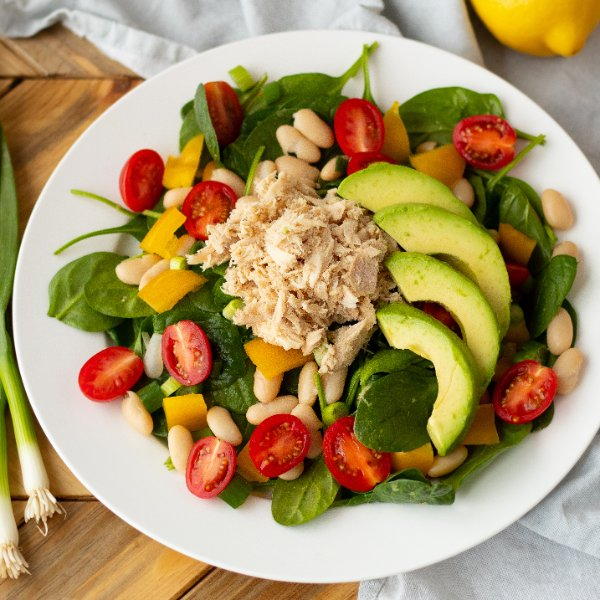

Lemony Tuna, White Bean & Sweet Pepper Spinach Salad

Prep Time
35 min
Nutrition (per serving)
499.2 kcalCalories
28.2 gProtein
50.4 gCarbs
24.2 gFat
Full nutrition table
| Calories | 499.2 kcal |
| Total fat | 24.2 g |
| Saturated fat | 3.6 g |
| Trans fat | 0 g |
| Cholesterol | 21.6 mg |
| Sodium | 497.7 mg |
| Carbohydrates | 50.4 g |
| Fiber | 17.8 g |
| Sugars | 12.2 g |
| Protein | 28.2 g |
| Potassium | 1717.2 mg |
| Calcium | 205.7 mg |
| Iron | 6.4 mg |
| Vitamin A | 1212.9 IU |
| Vitamin C | 163.6 mg |
| Vitamin D | 28.2 IU |
Cookware
Ingredients
- 2avocados
- 2 (5 oz) pkgsbaby spinach
- 2 (15 oz) canscannellini (white kidney) beans
- 2 (6 oz) canschunk light tuna in water
- 2 clovesgarlic
- 1 pintgrape tomatoes
- 1 small bunchgreen onions (scallions)
- 2lemons
- 2yellow bell peppers
- black pepper
- extra virgin olive oil
- salt
Steps
- Wash and dry the fresh produce. (Skip the spinach if it came pre-washed.)2 lemons
2 (5 oz) pkgs baby spinach
2 yellow bell peppers
1 pint grape tomatoes
1 small bunch green onions (scallions) - Grate the zest from the lemon and transfer to a small bowl, then juice the lemon into the same bowl. Peel and mince (or press) the garlic; add to bowl with the lemon.2 cloves garlic
- Add oil, salt, and pepper to the bowl with the lemon juice and whisk to combine the dressing.2 tbsp extra virgin olive oil
½ tsp salt
½ tsp black pepper - Drain and rinse the beans; set aside to drain further.2 (15 oz) cans cannellini (white kidney) beans
- Drain the tuna and transfer to a large salad bowl; flake with a fork. Place the spinach in the bowl with the tuna.2 (6 oz) cans chunk light tuna in water
- Cut the bell pepper into quarters lengthwise; remove and discard the seeds and white membranes. Medium dice the pepper and add to the bowl with the spinach.
- Remove the root ends from the green onions and cut them crosswise, into ¼ inch pieces at an angle; add them to the salad bowl.
- Halve the tomatoes and add them to the salad bowl as well.
- Add beans to the salad bowl along with the dressing; toss to coat.
- Halve avocado and remove pit; scoop out the flesh and cut into slices; set aside.2 avocados
- To serve, divide the salad between plates or bowls and top with avocado slices. Enjoy!